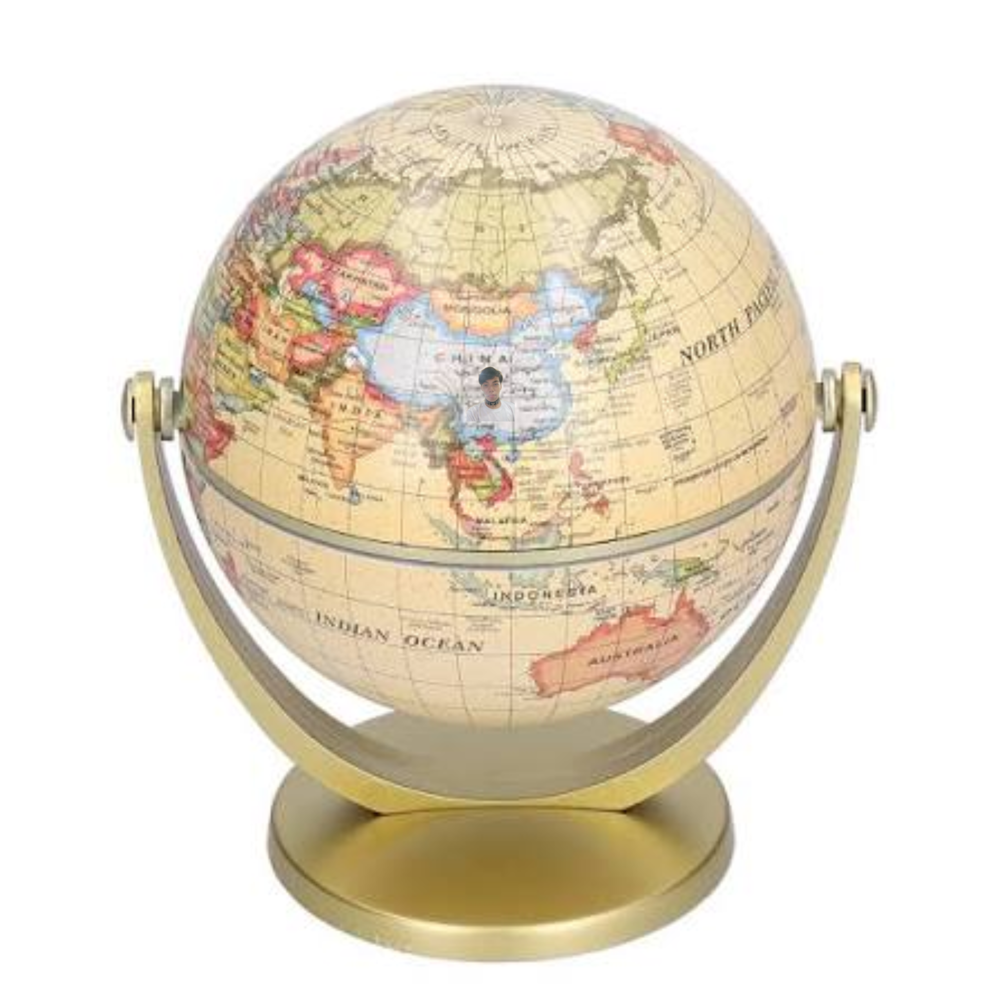
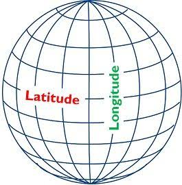
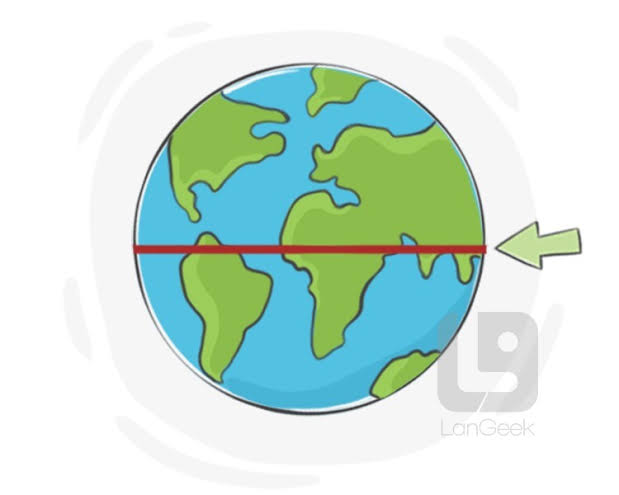
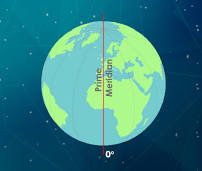

Mapa
Ang mapa ay isang patag na representasyon ng buong mundo o isang bahagi nito. Ginagamit ito upang makita ang lokasyon, direksyon, distansya, at iba pang katangian ng isang lugar.
Histo-page · Hiraya · TechPro 1103
Ang heograpiya ay pag-aaral tungkol sa daigdig, kabilang ang mga lugar, anyong lupa at tubig, lokasyon, klima, tao, at ugnayan ng mga ito sa isa't isa. Sa pag-aaral ng heograpiya, ginagamit ang iba't ibang kasangkapan upang matukoy at mailarawan ang mga lugar sa mundo.
Mahalagang ideya: Ang mapa, globo, latitude, longitude, at mga guhit ng daigdig ay tumutulong upang mas madaling matukoy ang lokasyon ng isang lugar.
Ang mapa ay isang patag na representasyon ng buong mundo o isang bahagi nito. Ginagamit ito upang makita ang lokasyon, direksyon, distansya, at iba pang katangian ng isang lugar.
Ang globo ay isang modelo ng daigdig na hugis halos katulad ng tunay na mundo. Mas naipapakita nito ang hugis at pagkakaayos ng mga kontinente at karagatan nang hindi gaanong naaapektuhan ng pagbaluktot ng isang patag na mapa.

Ang latitude at longitude ay mga imahinasyong guhit na ginagamit upang matukoy ang eksaktong posisyon ng isang lugar sa ibabaw ng daigdig.
Ang latitude ay mga imahinasyong guhit na pahalang sa globo. Sinusukat nito kung gaano kalayo ang isang lugar mula sa Ekwador, patungo sa Hilaga o Timog.
Ang mga latitude ay may sukat mula 0° hanggang 90° North o South.
Ang longitude ay mga imahinasyong guhit na mula Hilaga patungong Timog sa globo. Sinusukat nito kung gaano kalayo ang isang lugar mula sa Prime Meridian patungong Silangan o Kanluran.
Ang longitude ay sinusukat mula 0° hanggang 180° East o West.

Ang Ekwador ay ang pangunahing guhit ng latitude na nasa 0° latitude. Hinahati nito ang daigdig sa dalawang bahagi: Northern Hemisphere at Southern Hemisphere.

Ang Prime Meridian ay ang pangunahing guhit ng longitude na nasa 0° longitude. Dumaraan ito sa Greenwich, England, at nagsisilbing panimulang batayan sa pagsukat ng longitude.
Hinahati nito ang daigdig sa Eastern Hemisphere at Western Hemisphere.

Ang International Date Line ay isang imahinasyong linya na karaniwang matatagpuan malapit sa 180° longitude. Ito ay ginagamit bilang batayan sa pagbabago ng petsa kapag naglalakbay mula sa isang panig ng daigdig patungo sa kabilang panig.
Hindi ito isang tuwid na linya sa lahat ng bahagi dahil may mga paglihis upang maiwasan ang paghahati sa ilang bansa at teritoryo.
Bukod sa Ekwador, may apat na mahalagang guhit ng latitude na ginagamit upang hatiin at mailarawan ang iba't ibang bahagi ng daigdig.
Isang mahalagang latitude sa Northern Hemisphere.
Isang mahalagang latitude sa Southern Hemisphere.
Guhit ng latitude na nakapalibot sa hilagang polar region.
Guhit ng latitude na nakapalibot sa timog polar region.
Ang lokasyon ay tumutukoy sa kinaroroonan ng isang lugar. Maaaring ilarawan ang lokasyon sa iba't ibang paraan depende sa impormasyong ginagamit.
Tinutukoy ang eksaktong kinaroroonan ng isang lugar gamit ang tiyak na geographic coordinates, gaya ng latitude at longitude.
Tinutukoy ang isang lugar batay sa kaugnayan nito sa ibang lugar o mga nakapaligid na lugar.
Tumutukoy sa lokasyon ng isang lugar batay sa mga kalapit o karatig na lugar nito. Nakakatulong ito upang mailarawan kung ano ang nasa paligid ng isang lugar.
Tumutukoy sa lokasyon ng isang lugar na nauugnay sa mga pulo o isla. Ang isang insular na bansa o lugar ay binubuo ng isa o higit pang mga pulo at napapaligiran ng katubigan.
Ang cartograpo ay taong dalubhasa sa paggawa, pagbuo, pagsusuri, at pagdidisenyo ng mga mapa.
Gumagamit ang mga Cartograpo ng iba't ibang impormasyon at teknolohiya upang makagawa ng mga mapa na malinaw at kapaki-pakinabang sa pag-aaral ng mga lugar sa mundo.